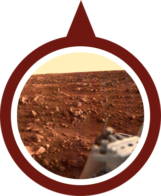
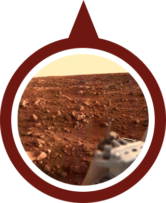

Mars
Mars is the fourth planet from the Sun and the second-smallest planet
in the Solar System, being larger than only Mercury. In English, Mars
carries the name of the Roman god of war and is often referred to as
the "Red Planet".
Source : Wikipedia